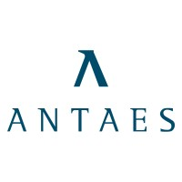

Skills
Education
Master in Computer Science
Certification & Trainings
Palo Alto's Strategic Systems Approach Level 1
Nonviolent Communication Level 1 & 2
Functional Programming Principles in Scala
Certification Sun Java Programmer 5.0
Certified Scrum Master
Languages
- French
- English
Interests
About me
What I like to most, is to help people solving a problem. Any kind of problem.
My experience as Engineer working in an Agile environnement gave me tools to cut big problems into smaller ones, move toward the objective one step at a time, and keep my
eyes focused on producing what bring the most value to users.
My experience as Team Coach offers me ability to organize workshops, trainings and develop relationship between people to make the "1+1=3" concept a reality in everyday
and everyone's life.
My passion for the Palo Alto's Systemic Approach brought me the ability to better understand human complexity, by seeing problems from the higher picture, and focusing
more on how to solve problems rather than spending time understanding why the problem exists.
Experiences
My mission is to help groups of people (team, squad, bubble, circle, guild, council) to become more effective (work on the right thing), efficient (working the right way), and resilient (able to successfully deal with change).
- Facilitate team meetings: retrospectives, brainstorming sessions and conflict resolution
- Provide training to teams
- Support teams in applying Agile principles:
- Clarifying mission and/or objectives of the team
- Making sure the team have a shared and common way of tracking their objectives and their tasks
- Making sure all ceremonies (stand-up, weekly, retrospectives) are in place, and efficient
- Making sure the team has the ability to make decisions autonomously and to update their process without using consensus
- Share insights from annual survey result to teams and provide guidance on how to improve their dynamics
- Design a Feedback training based on Nonviolent Communication
- Define the SonarSource's Agile way of working for every teams, inspired by what has been done in development teams
- Establish Leapsome as the one-tool to deliver individual feedback across the company
- Design a Strengths workshop based on Gallup StrengthsFinder
- Help some teams to develop new leadership models that support team's growth while staying self-organized
- Creating a Facilitator Community to support facilitating meetings across the company
- 50% of the teams are doing team retrospectives at least every quarter
- 250 people have been trained to deliver individual feedback using Nonviolent Communication
- 1800 individual feedback have been delivered using Leapsome
- 10 teams participated in the Gallup Strengths workshop
On top of developing features for the SonarQube and SonarCloud projects, I'm contributing on keeping our self-organized team on track with the growing challenge of supporting more and more users. I was leading the following technical topics: authentication, user management, and web services API.
Developing, from maintenance to development of new features (specification, implementation, testing, validation), of the SonarQube project.

Aug 2010 - Oct 2012Developing, from maintenance to development of new features, of the nBDS project, a web application used to administrate Geneva schools.
Java Developer
Swissquote - Vaud, Switzerland October 2009 - July 2010- Developing new features on a new forex trading platform project. - Developing new features on existing customer signup application, introducing integration tests using Selenium.
Software Developer
Hortis - Geneva, Switzerland November 2007 - September 2009Developing, from maintenance to development of new features on the open source project « Sonar », a continuous quality control tool for Java applications